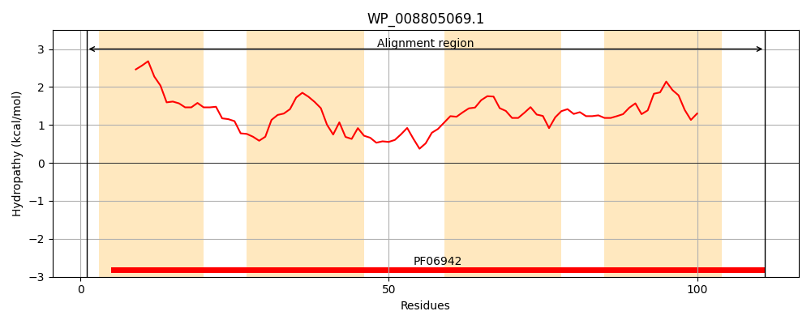
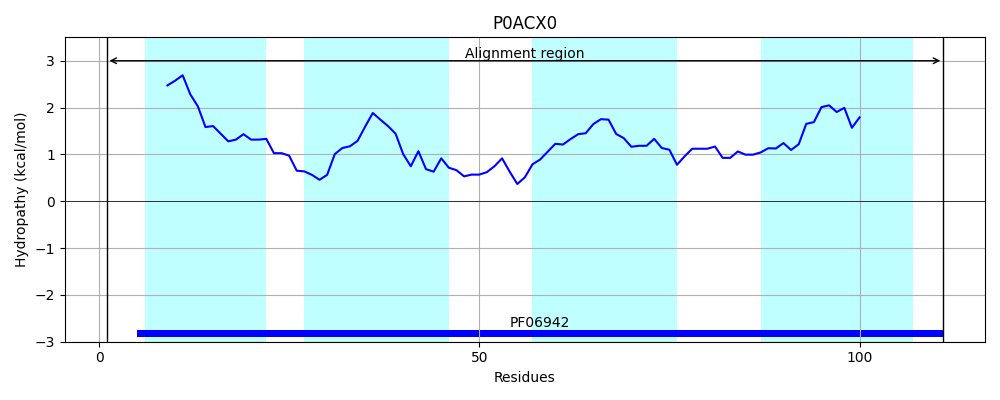
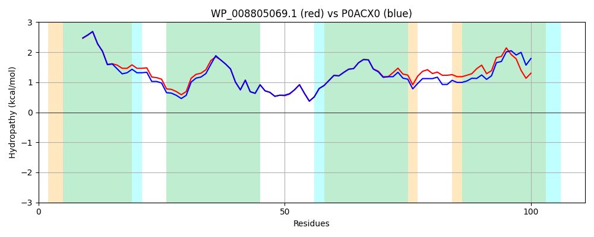

Hit Accession: P0ACX0
Hit TCID: 9.B.72.1.2
Hit Description: gnl|BL_ORD_ID|8739 gnl|TC-DB|P0ACX0|9.B.72.1.2 Inner membrane protein YdgC OS=Escherichia coli (strain K12) GN=ydgC PE=1 SV=1
Mach Len: 111
e:0.000000
Query TMS Count : 4
Hit TMS Count: 4
TMS-Overlap Score: 3.550000
Predicted Substrates:None
BLAST Alignment:
| Protein Hydropathy Plots: | |
|---|---|
|  |  |
Pairwise Alignment-Hydropathy Plot: | |
|  | |